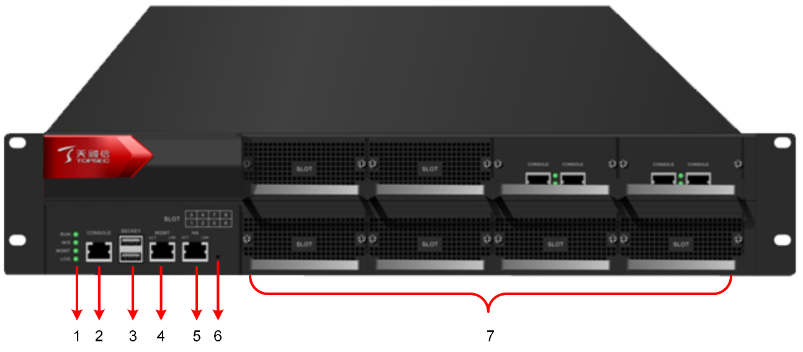
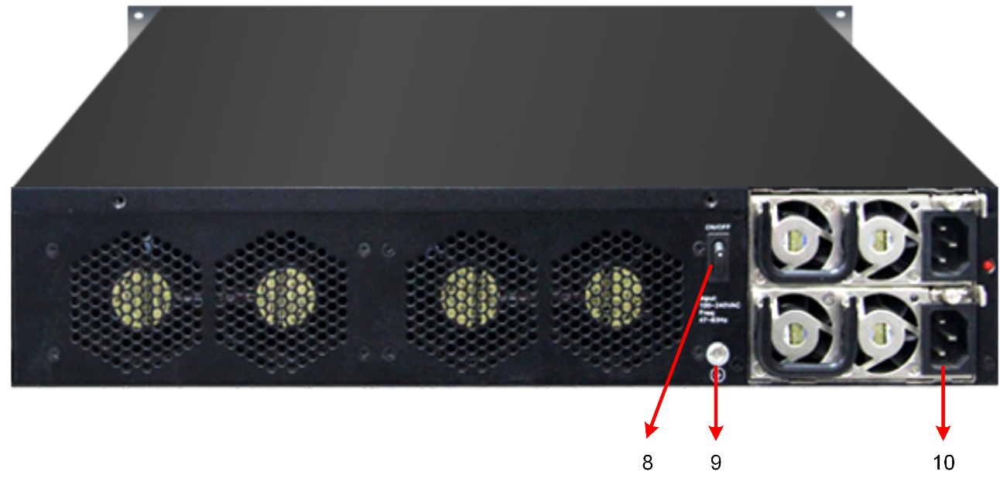

l系统组成
系统组成分类 |
说明 |
|---|---|
硬件形态 |
1U或2U机架型设备。 |
软件平台 |
支持3.2294版本及后续升级版本。 |
其他配套软件 |
产品软件和其他测试软件等。 |
l产品外观
以2U型设备为例，机箱前面板和后面板示意图如下图所示：


机箱前面板和背面板各个标号的具体说明如下表所示。
标号 |
名称 |
说明 |
|---|---|---|
1 |
指示灯 |
用于展示天融信防火墙系统当前工作状态。 |
2 |
串口 |
用于管理员对天融信防火墙系统进行本地配置和故障排除等操作。RJ45形式，支持波特率为9600。 |
3 |
USB口 |
用于加密认证的加密卡USB等外设接入。 |
4 |
管理口 |
用于管理员对天融信防火墙进行管理。管理口为独立的10/100/1000MBase-T自适应以太网接口，符合IEEE802.3 10Base-T、IEEE802.3u 100Base-TX、IEEE802.3u 1000Base-T标准。 |
5 |
HA口 |
用于高可用性功能模块的心跳线连接口，从而进行两台天融信防火墙系统之间的数据备份。 |
6 |
针孔（内有重启按钮） |
用于重启天融信防火墙系统。 |
7 |
扩展插槽 |
用于扩展卡的安装（不同的NGFW产品支持不同数量的扩展模块）。 |
8 |
电源开关 |
用于开启/关闭NGFW电源。 |
9 |
接地保护螺丝 |
用于接地以防止产生静电及被雷击。 |
10 |
电源线插槽 |
用于通过电源线将NGFW的内置电源与外部供电电源连接。 |
l设备电源
NGFW可以提供直流供电和双交流供电，具体可根据用户需要进行选择。双交流供电是指从两个不同的交流电源接收交流电输入。这种方式下，可将NGFW分别接入这两个独立电源中，这样即使一个电源出现故障也不会影响电源可靠性。电源开关和电源线插槽位于机箱的后面板。
Ø额定电压范围：100V～240VAC，47Hz～63Hz交流电流。
Ø最大输出功率：400W。